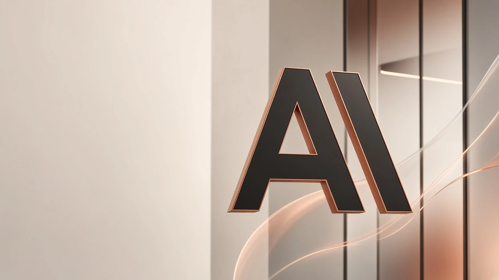
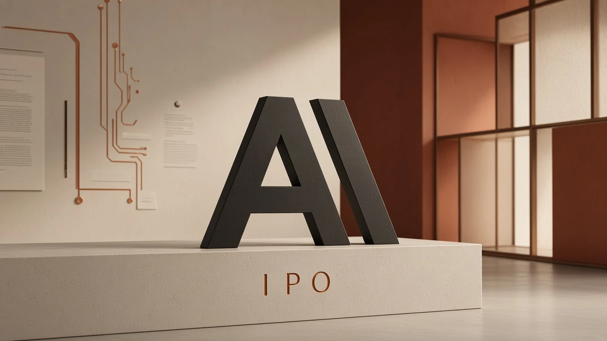

Open Uniswap
Open UniswapA path through a question.
Restate the claim, set the terms, and walk the steps in order. Useful when a paragraph is dense or two accounts disagree.
The value is the path, which a reader can check. A fluent answer is still something to verify.

Community token
ANT is an independent community token. The pictures are studies of an AI company and of public markets. They are not a listing notice.
Reasoning, writing, code
Claude is the assistant published by the company that uses a lettermark like the one on this page. People use that kind of assistant to think through a passage, shape a draft, or look at a piece of code. The description here is general. This page has no chat window and no connection to the service.
A careful assistant keeps the person in charge. It can lay out steps, offer a shorter sentence, or point at a line that fails. The person still decides what to send, what to ship, and what to believe.
Restate the claim, set the terms, and walk the steps in order. Useful when a paragraph is dense or two accounts disagree.
The value is the path, which a reader can check. A fluent answer is still something to verify.
Open a note, cut it down, or shift it from a lab voice to a plain one. The words that leave the room belong to the person who sends them.
Editing is the work. The assistant proposes; the writer keeps the sentence.
Name a function, read a stack trace, or try a smaller example. The sketch is a starting file, not a program running on this site.
Tests and review stay with the person who merges the change.
The mark on the page
The same mark opens the market study, stands on the plinth, and appears on the city picture. On this site it names the ANT token. The company’s own sites are linked further down, kept as their own doors.

A study of a public offering
What the room is for.The picture places the community mark in a hall that suggests a listing. It is concept art for this page: a way to look at the theme of a company meeting public markets.
What the room leaves out.There is no date, price, or share count in the text of this site. ANT is a community token on Ethereum. It is separate from equity in Anthropic PBC and separate from access to Claude.
The room next door
Follow the community account recorded here. If you want the company or the assistant, leave this page and use their sites.
Token record
Supply, tax, and liquidity are not stated. Copy writes the address exactly.
Questions
No. It is a community page for a token that uses a similar name and mark. The company publishes at anthropic.com.
No. There is no chat here and no login to an assistant. Claude is reached on the company’s own site.
No. Numbers and filing labels inside the city picture are drawn. This page does not repeat them as facts.
It is 0x0b84cd2a58159057fe71a1a9438a72c5c97ab985 on Ethereum. The same string is on the copy button and in the Uniswap, Dexscreener, and Etherscan links.
Open the Etherscan link and compare the address with the string on this page. The Uniswap link sets that address as the output currency. The Dexscreener link is the chart page for the same address.
Three: the cream market hall, the city banner with servers and a drawn filing, and the copper room with the mark on a plinth. Each is shown whole. Figures inside the city banner stay inside the picture.